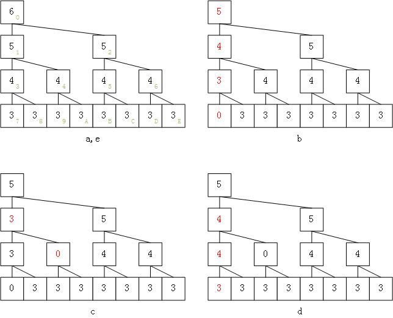

1. 致谢
2. 序言
内存分配机制是操作系统中的一个重要课题， 系统设计者要在复杂度、时间开销、空间开销等方面寻找平衡点。
Linux物理内存页框的主要分配机制就是伙伴算法，这保证了系统层面的可靠性。 但是伙伴算法总是给用户分配大小为2的幂次的内存块，在最糟糕的情况下，这会导致近50%的空间浪费。 因此在伙伴算法分配的较大内存块的基础上，Linux采用slab分配器切出更小的单元给用户。 另外为了满足内核频繁地创建和撤销一定类型的对象，Linux还使用了对象缓存机制。 kmalloc在伙伴算法之下基于slab分配器和对象缓存机制，在内核地址空间分配连续的内存区域。 vmalloc在伙伴算法之下基于页表拼接内存从而满足那些仅需要虚拟地址空间连续的请求。 通过这些不同层面的内存分配算法，Linux达到了一种可靠性和性能的平衡。
操作系统提供的内存分配机制并不一定能满足应用程序在速度和可靠性方面的需求。 VxWorks中系统内存池的动态分配采用最先匹配（First-Fit）算法，感觉是把实时性放在第1位而放弃了稳定性。 VxWorks要求应用程序尽量避免动态分配和释放内存，以最大限度地保证系统的稳定性！！！ 从这里，我们可以窥见到把Linux改造成实时操作系统要面临的众多问题之一。
由于网上没有通行的伙伴内存管理库，我们只好再造一次轮子。 好在云风、wuwenbin、Bean_lee等人在博客中对此进行了深入地探讨，并提供了源代码供参考。 他们的工作为本文这个模块提供了非常理想的基础。
3. 伙伴算法的原理
伙伴算法管理2的幂次大小的一个内存池，它按照满二叉树来理解这个内存池。
-
分配时，深度优先搜索合适的空间，若没有则不断均分大的空闲空间，直到刚好大于等于需求。
-
释放时，左右子树若同时空闲就可以合并成完整的大空闲空间，该过程向上递推进行。
上图演示了一个buddy系统的典型运作情况：
-
a：空间为64的空闲内存池；
-
b：分配了大小为7的空间后，内存池还剩32、16和8这三种大小的空闲空间；
-
c：分配了大小为9的空间后，内存池还剩32、8这两种大小的空闲空间；
-
d：大小为7的空间释放了，合并出1个大小为16的空闲空间；
-
e：大小为9的空间释放了，递推合并出整个大小为64的空闲空间。
通过上述方案，伙伴算法可以保证分配的空间按照幂次聚集，从而也能在释放时尽可能合并成大空闲空间。 这个算法可以连续运行，不会因为内存碎片的累积而慢慢走向崩溃。
想要直观地观察伙伴系统的运行情况，可以执行本文附带的伙伴系统演示工具：buddy.exe。 这是鄙人读书时用VC6写的一个图形化演示程序，有自动和手动两种模式展现伙伴系统运行时的情况。
伙伴算法的优点：
-
复杂度低：相当于采用二分法遍历空闲池，分配和释放动作都很快；
-
非侵入式：所分配的内存附近没有用来描述空间状态的cookie；
-
可持续性：不存在内存碎片积累问题，可以长期可靠运行；
伙伴算法的缺点：
-
它用来描述内存池状态的二叉树会占用一定比列的内存空间；
-
它在内存池使用过半时，对大空间分配需求的支持不是最好的；
-
它分配给应用层的实际空间总是2的幂次大小，这常常导致空间浪费；
4. 本模块实现方案
伙伴算法需要维护一棵满二叉树，用来记录内存池的分配情况。 有些伙伴算法代码用链表来实现这颗二叉树，这带来了遍历时的低效，并导致高昂的内存开销。 鄙人2001年写的buddy.exe就是这样做的，当时维护链表二叉树很费力。 实际上由于伙伴算法的二叉树上各节点只需要记录对应内存池的容量，它可以非常简单。 在Bean_lee的代码中，每个节点仅用一个字节表示，这些节点聚在一起以数组方式访问。 节点中使用幂次描述对应空间的大小，0表示已被分配（因此最小分配单位不能是1-byte，这不算遗憾）。 至于二叉树的遍历，根本不需要左子树、右子树这种指针。
#define LSUBTREE(index) (((index) << 1) + 1) #define RSUBTREE(index) (((index) << 1) + 2) #define PARENT(index) ((((index) + 1) >> 1) - 1)
通过上面这3个宏，可以高效地计算索引，从而在二叉树中移动。

上图演示了上一节的buddy系统运作时二叉树的变化情况：
-
a：空间为64的空闲内存池：二叉树各节点记录对应的幂次，表明对应空闲块的大小；
-
b：自树根向下，左优先为空间7寻找幂次为3的空闲块，其幂次清0表示被分配，递推调整父节点；
-
c：自树根向下，左优先为空间9寻找幂次为4的空闲块，其幂次清0表示被分配，递推调整父节点；
-
d：定位被释放空间对应的二叉树节点，恢复其幂次后，递推调整父节点；
-
e：定位被释放空间对应的二叉树节点，恢复其幂次后，递推调整父节点，二叉树恰好复原成a状态。
5. 使用本模块
本模块仅由buddy.h和buddy.c两个文件组成。 其中buddy.h是模块的接口，提供了1个宏和7个接口函数：
-
BUDDY_ORDER_MAX：系统允许的理论最大内存池的幂次（主要针对32位与64位系统的差异，实际达不到）；
-
buddy_create()：创建1个buddy对象，用来管理一个独立的伙伴内存池，应用层可以创建多个对象；
-
buddy_destroy()：销毁指定buddy对象，该内存池还给操作系统；
-
buddy_status()：通过打印报告指定buddy对象内存池的具体使用情况（仅用于调试）；
-
buddy_malloc()：在指定buddy对象内存池中分配一块空间，类似系统的malloc()；
-
buddy_realloc()：在指定buddy对象内存池中调整一块空间（未经测试），类似系统的realloc()；
-
buddy_free()：在指定buddy对象内存池中释放一块空间，类似系统的free()。
5.1. buddy_create
void *buddy_create(int order_max, int order_min);
buddy_create有2个参数，分别指明内存池的总大小和最小分配大小。 它们仅指明幂次，具体以byte为单位的size是推算出来的。 显然，要求“0 < order_min < order_max ⇐ BUDDY_ORDER_MAX”，否则buddy_create会失败退出。
buddy_create首先申请一小片空间作为buddy对象， 然后申请(1 << order_max)-byte空间作为待分配的内存池， 最后申请( (1 << (order_max - order_min + 1)) - 1 )-byte空间作为二叉树描述内存池状态。 显然，当order_min为1时，用于描述内存池的二叉树只比内存池少1-byte，还没使用空间效率就剩50%了。 根据应用程序动态申请空间的大小特点，建议适当调高order_min的值，以满足最主要的中大型内存需求。 对于码流分析系统，设置order_min为6比较合适，此时二叉树仅为内存池大小的1.6%（1/64）。
二叉树需要初始化才能正常使用，这要通过应用层主动调用buddy_init接口实现。 如果应用层忘了调用这个接口，它的任何分配申请都会因“空间不够”错误而失败。
buddy_create的返回值其实是这个buddy对象的指针，为了隐藏对象的细节，采用void *类型。 如果返回NULL，说明出现了错误。
5.2. buddy_destroy
int buddy_destroy(void *id);
buddy_destroy依次把二叉树、内存池和buddy对象自身释放回OS。
5.3. buddy_init
int buddy_init(void *id);
buddy_init可以快速初始化描述内存池的二叉树。 无论内存池处于任何状态，它都以同样的速度使内存池进入未分配状态。 当然应用层不可以再使用早先分配过的空间了，否则会与后面的分配情况出现冲突。
5.4. buddy_status
int buddy_status(void *id, int enable, const char *hint); /* for debug */
这个接口仅仅用于调试目的，它可以在开发阶段增加内存池使用情况的透明度。 buddy_status扫描二叉树，通过stderr报告每种幂次内存块的使用数量，最后会报告整个内存池的使用比例。 enable为0时，这个接口直接返回0。 如果hint非NULL，会在行尾打印这个字符串，以提示应用层运行的上下文。
5.5. buddy_malloc
void *buddy_malloc(void *id, size_t size);
这个接口尽量仿照了Linux的malloc，唯一的不同是参数中多了一个id来确定具体的buddy对象。
5.6. buddy_realloc
void *buddy_realloc(void *id, void *ptr, size_t size); /* FIXME: need to be test */
这个接口尽量仿照了Linux的realloc，唯一的不同是参数中多了一个id来确定具体的buddy对象。
5.7. buddy_free
void buddy_free(void *id, void *ptr);
这个接口尽量仿照了Linux的free，唯一的不同是参数中多了一个id来确定具体的buddy对象。
先写这些吧！ 朋友们要是发现了BUG，或者有好的意见和建议，可以通过周骋联系我。